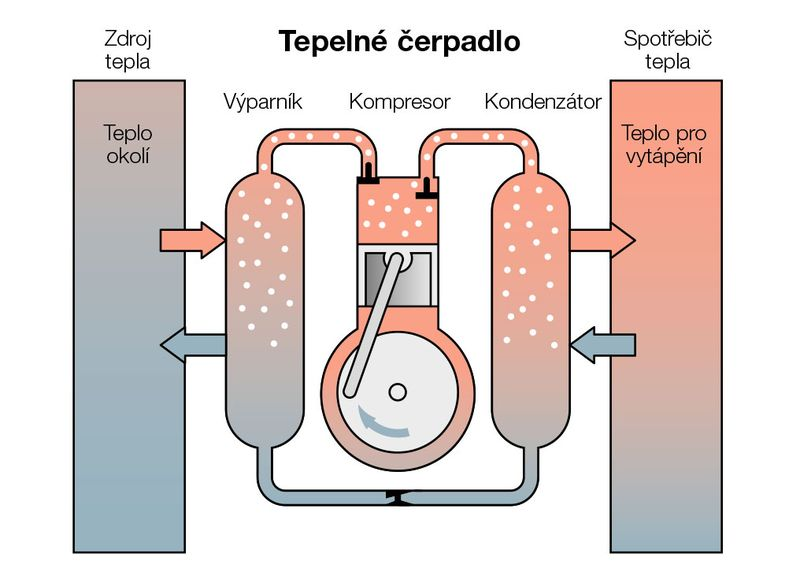
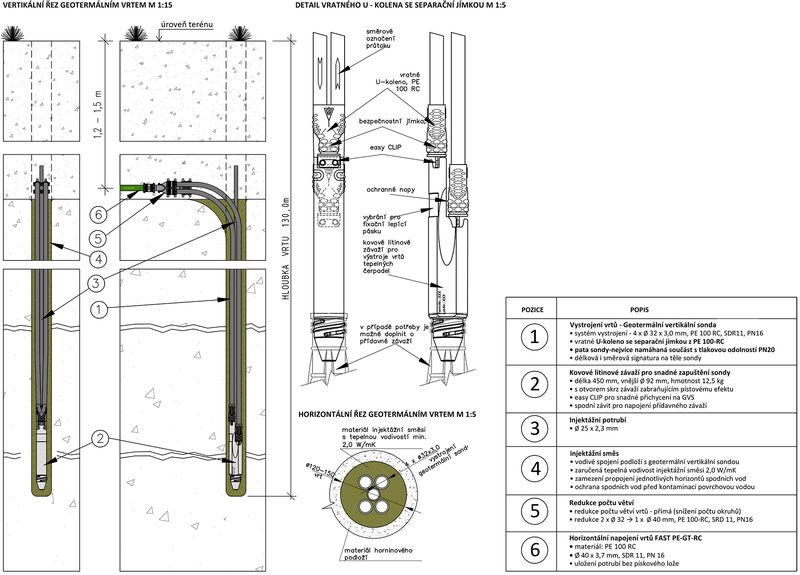

Způsobů vytápění domu a ohřívání vody je v dnešní době celá řada. Lze použít elektrické vytápění, plynový kotel, teplené čerpadlo či solární systémy. Myslím si, že neexistuje jedno ideální řešení. Každému vyhovuje něco jiného. My jsme už od začátku zvažovali tepelné čerpadlo země-voda, ačkoliv máme na pozemku i přípojku zemního plynu.
Výhody tepelného čerpadla
Tepelné čerpadlo je ekologické řešení, jelikož využívá obnovitelný zdroj energie - v našem případě geotermální vrt. Velkou výhodou je vysoká účinnost a tím pádem i nízké provozní náklady. Účinnost čerpadla udává topný faktor (COP), což je poměr mezi vyrobeným teplem a spotřebovanou elektrickou energií. Běžné hodnoty COP se pohybují mezi 2.5 - 5. Čím vyšší hodnota, tím vyšší účinnost. Naše vybrané čerpadlo (Nibe S1255 PC) dosahuje dokonce až 5.5. Za největší výhodu tepelného čerpadla však považuji možnost chlazení podlahovkou v létě. Čerpadlo typu země-voda je oproti vzduch-voda zcela tiché, má nižší spotřebu elektřiny, delší životnost a nižší servisní náklady. Má takřka bezúdržbový provoz. V našich klimatických podmínkách je mnohem účinnější, jelikož teplota horninového podloží je po celý rok konstantní (7–11°C) a neklesá pod nulu. Tepelné čerpadlo se doporučuje používat s nízkoteplotním otopným systémem jako např. podlahové topení.
Nevýhodou tepelného čerpadla je jeho vysoká vstupní investice. Z tohoto důvodu ani není vhodné čerpadlo kombinovat se solárními kolektory - nevyplatí se to. Při pořízení čerpadla lze zažádat o dotaci a dále získat výhodnější sazbu elektřiny na provoz celé domácnosti. Návratnost investice do tepleného čerpadla oproti vytápění plynem je u pasivního domu zhruba 15 let, přičemž životnost kompresoru tepelného čerpadla země-voda bývá 20 let. Poté lze však čerpadlo repasovat a provozovat dál. Nám ale stejně nejde o to zvolit za každou cenu nejlevnější způsob vytápění. Důležitější je komfort a šetrnost k životnímu prostředí.
Čerpadlo typu země-voda může získávat teplo buď nepřímo ze slunečního záření pomocí plošného kolektoru, který je zakopán 1.2 m pod zemí, nebo pomocí hlubinného geotermálního vrtu. Zpočátku jsme počítali s plošným kolektorem, který je výrazně levnější než vrt. Má to ale svá úskalí - kolektor zabere velkou část pozemku, neměl by být zastíněn a není příliš vhodné nad ním sázet stromy. Navíc vrt oproti zemnímu kolektoru umožňuje pasivní chlazení, jelikož je teplotně stabilní a v létě se neohřívá vlivem slunečního záření. Po konzultaci s projektantem jsme se tedy nakonec rozhodli pro geotermální vrt.

Zdroj: Kdy se vyplatí tepelné čerpadlo
Projekt vrtu
Během shánění vyjadřovaček dotčených orgánů pro povolení stavby (s vrtem) jsme se dozvěděli, že na geotermální vrt bude potřeba zpracovat samostatnou projektovou dokumentaci. Pro získání povolení k realizaci vrtu pro tepelné čerpadlo bylo potřeba zajistit souhlas vodoprávního úřadu (odbor životního prostředí), stanovisko báňského úřadu a stanovisko Povodí Moravy. Vodoprávní úřad požaduje:
- Projekt vrtných a geologických prací pro navržený vrt
- Vyjádření osoby s odbornou způsobilostí v oboru hydrogeologie
Poptali jsme několik firem a náš projektant nám doporučil společnost HS geo, se kterou už v minulosti spolupracoval. Majitelé HS geo nás příjemně překvapili. Předložili nám rozumnou cenovou nabídku na vyhotovení dokumentace i realizaci vrtu, ochotně zodpověděli všechny otázky, a tak jsme se pustili do spolupráce. Velkou výhodou je, že velmi dobře znají místní geologické poměry. Například jsme se dozvěděli, že hladina podzemní vody je v naší lokalitě cca 60 m. Pro zpracování dokumentace stačilo dodat jen info k tepelnému čerpadlu a kde bude vrt umístěn. Vyhotovení dokumentace zabralo 2 týdny a stálo necelých 10k Kč. Dostali jsme 4 paré a PDF. Projektová dokumentace vrtu pro tepelné čerpadlo má celkem 26 stran a obsahuje: průvodní zprávu, souhrnnou technickou zprávu, situační výkresy, výkresovou dokumentaci vrtu, hydrogeologické vyjádření včetně geologického profilu a osvědčení k činnosti.
Princip fungování geotermálního vrtu
Vrt využívá jako zdroj tepla geotermální energii Země, která vzniká rozpadem radioaktivních prvků. Slunce ovlivňuje svým zářením půdu až do hloubky 15 m pod povrchem, kde je teplota cca 10°C, což odpovídá průměrné roční teplotě venkovního vzduchu. Pod touto úrovní se již na teplotě neprojevuje vliv ročních období. Teplota Země se mění s hloubkou - čím hlouběji, tím tepleji. Každých 100 m stoupá teplota Země o 3°C. Z tohoto důvodu je vždy lepší mít 1 hluboký vrt než 2 mělké vrty. Geotermální vrt má v sobě kolektor (GVS), který tvoří dvě smyčky plastového potrubí, naplněné nemrznoucí teplonosnou kapalinou. Volný prostor mezi potrubím a stěnou vrtu je tlakově injektován směsí bentonitu a cementu pro zajištění kontaktu s okolní horninou a optimálního přenosu tepelné energie. Kolektor pak předává zemní teplo čerpadlu. Životnost vrtu může být klidně 100 a více let.

Dimenzování vrtu
Dimenzování hlubinného vrtu je celkem věda. Správnou hloubku vrtu ovlivňuje mnoho faktorů: typ geologického podloží, tepelná ztráta domu, potřeba teplé vody, výkon čerpadla a očekávaný počet provozních hodin za rok. Běžné vrty mají hloubku až 150 m. Pokud je vrtů víc, je vhodné je umisťovat ve vzájemné vzdálenosti rovnající se 10% jejich délky, minimálně však 6 m. Geologický profil podloží má významný vliv na tepelnou vodivost vrtu. Měrný výkon jímání tepla z horninového podloží se obvykle pohybuje mezi 30 - 100 W/m. Největší měrný odběrový tepelný tok má proudící podzemní voda.
Jednoduchým hrubým výpočtem se pokusím odhadnout vhodnou hloubku našeho vrtu. Tepelné čerpadlo Nibe S1255 PC má dle energetického štítku jmenovitý výkon (rated heat output) 5.5 kW. Čerpadlo bude vytápět pasivní dům a ohřívat teplou vodu. Pro tyto provozní podmínky se dle norem obvykle navrhují vrty s roční zátěží 2400 provozních hodin. Při prodloužení doby provozu vrtu pak výkon jímání klesá. Pokud dojde k poddimenzování délky vrtu, hrozí omezení funkčnosti tepelného čerpadla.
Předpokládaný geologický profil našeho vrtu:
- 0,0 – 0,5 m - HLÍNA humózní písčito-prachovitá hnědá
- 0,5 – 12,0 m - HLÍNA sprašová světle hnědá, slídnatá, vápnitá – eolickodeluviální (pleistocén)
- 12,0 – 25,0 m - JÍL rezivě hnědý až šedohnědý – fluviální (ottnang)
- 25,0 – 27,0 m - ŠTĚRK písčito-hlinitý hnědý, slídnatý – fluviální (ottnang)
- 27,0 – 50,0 m - JÍL písčitý hnědý až hnědošedý, nevápnitý – fluviální (ottnang)
- 50,0 – 55,0 m - ŠTĚRK písčito-hlinitý šedohnědý, slídnatý – eluviální
- 55,0 – 130,0 m - GRANODIORIT, amfibol-biotitický – magmatický
Do 55 m hloubky se nachází hlína, jíl a štěrk, jejichž výkon jímání je 30 - 40 W/m (při zátěži 2400 h). Dále pokračuje Granodiorit, jehož výkon jímání je 55 - 70 W/m (při zátěži 2400 h). Když to zjednoduším, tak horní polovina vrtu má odběrový výkon 35 W/m a dolní polovina 62 W/m. Průměrná hodnota výkonu jímání tepla z podloží je tedy 49 W/m. Doporučená hloubka vrtu takto vychází na 5500 W / 49 W/m = 112 m.
Z počátku jsem měl obavy, aby nebyl vrt poddimenzován. Oslovil jsem tedy několik odborníků, kteří se zabývají problematikou tepelných čerpadel a realizací vrtů. Každý doporučil trošku jinou hloubku, ale návrhy se blížily mému odhadu:
- HS geo: 110 m
- TOP HEAT: 110 m
- Nibe.cz: 80-90 m
- H3Geo: 120 m
- GreenGas: 100 m
- GE-TRA: 130 m
Dolní polovina vrtu bude mít mnohem vyšší výkon jímání tepla. V tvrdém podloží bude vrtání jednodušší než v měkkém podloží (štěrk a písek), které se nachází v horní polovině. Z těchto důvodů se vyplatí realizovat jeden hlubší vrt, než-li dva mělčí. Proto jsme se rozhodli pro 1 vrt s hloubkou 130 m, což by mělo bez problému stačit i s rezervou.
Umístění vrtu
Naši projektanti navrhli umístit vrt do severo-východní části pozemku (červená tečka), kde bude i retenční nádrž a vsakovací podmok. Po konzultaci s HS geo jsme se však rozhodli vrt přemístit do místa přístřešku parkovacího stání (zelená tečka). Hlavním důvodem je, že vrt tak bude blíže tepelnému čerpadlu, umístěnému v technické místnosti v severo-západním rohu domu. Teoreticky by vrt mohl být umístěn i přímo pod domem. Jakmile se jednou vrt vyhloubí, zůstává jak je a nelze ho například opravit. Proto je potřeba používat kvalitní výrobky. HS geo používá GVS GEROtherm švýcarského výrobce Gerodur. Při návrhu umístění vrtu je potřeba brát ohled i na potřebný manipulační prostor při samotné realizaci, aby se k danému místu dostala vrtná souprava. Z tohoto důvodu je vhodné vrt udělat ještě před základovou deskou. Potom ale zase hrozí, že během stavebních prací by mohlo dojít k poškození a je tedy nutné vyústění GVS dobře zabezpečit. My jsme se s HS geo domluvili, že vrt uděláme někdy v průběhu hrubé stavby.
Chlazení tepelným čerpadlem
Chlazení podlahovkou je úsporné, efektivní a nezpůsobuje nepříjemný průvan ani žádná zdravotní rizika. Jedná se o jeden systém, který umí topit i chladit, takže není potřeba pořizovat žádné další zařízení. Chladit lze pasivně nebo aktivně. Při pasivním chlazení není v provozu kompresor, ale pouze oběhová čerpadla. Jedná se o velmi úsporné řešení. Pasivní chlazení v letním období navíc příznivě ovlivňuje tepelnou vydatnost vrtu v zimním období. Laicky řečeno - vrt se tím “nabíjí”. Kvůli regeneraci vrtu je tedy dobré chlazení využívat. Aktivní chlazení, které má většina čerpadel typu vzduch-voda, využívá kompresor, takže má i vyšší chladící výkon. Z obytného prostoru se tak stává velká lednička. S tím je pak spojen i problém s kondenzací vlhkosti. V našem domě budeme využívat pasivní chlazení.
Řekl jste to vlastně správně hned na začátku, efektivita se u čerpadel pohybuje kolem 2,5-5 COP, u této jednotky je to cca 2,1-4,7 v průměru tak máte celoroční COP asi 3,4.
Sami máme vrt s TČ a u pasivního domu jde z vlastní zkušenosti o nepodstatnou věc vzhledem třeba k rekuperaci, kolem které se točí vše.